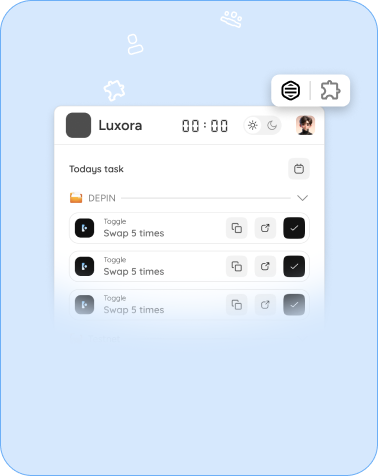
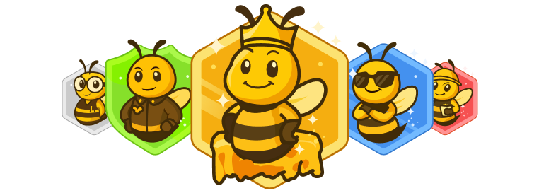
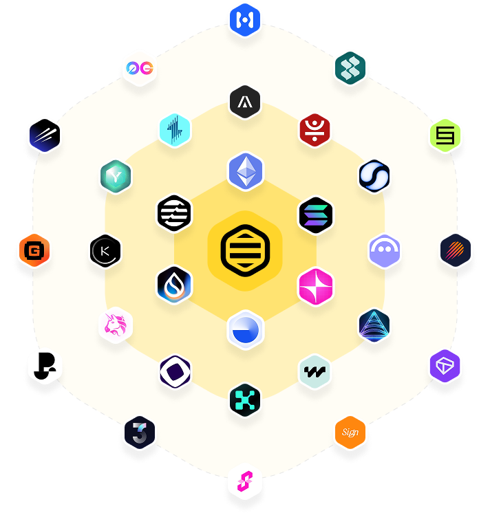

Your Web3 activities organized in one place
Luzora is a gamified consistency tool used to Track, schedule, and execute Web3 tasks effortlessly, stay organized and in control.
Luzora Impact
Achieve 2x More in Half the Time
No more juggling multiple platforms to keep a record of your activities. Luzora helps you track, schedule, and manage Web3 activities effortlessly.
Increase Your Web3 Productivity by 80%
Stay in control of your Web3 activities with a structured, intuitive system built for efficiency. We help you stay consistent on your repetitive the activities.
Focus on what matters without distractions.
Plan daily, weekly, and long-term goals with ease. Luzora is built to help Web3 enthusiasts, professionals, and teams get more done with less effort.
IMPACT
Win like a Bee
Build your Hive
Achieve your Goals

FEATURES

Pre-Save Tasks
Whether its for your on-chain activities or a desire to be consistent at anything. Pre-save it.

Recurring Task Scheduling
Tasks are auto-organized by assigned dates chosen by you.

Automated and Manual Verification
Verify on-chain and off-chain activities seamlessly. Trash Jotters and Keep track of all you’ve done.

Access to Web3 resources
We provide a directory of web3 resources such as Faucets, and Eligibility checkers in various ecosystem.

Web extension
Access pre-saved tasks on the go via a web extension that ensures that you are one click away from completing your task.
HOW LUZORA WORKS
Sign into LUZORA
Signing up is quick and easy, all you need is a Google account, social account or your wallet signature!

Add and schedule tasks
A wide range of projects are integrated into LUZORA, auto add or custom add tasks to your schedule with easy steps

Install extension
We created the LUZORA Extension to allow you have direct access to your pre-saved tasks on a daily basis.

Crafted for Web3 Enthusiasts, Professionals, and Teams
Whether you are a Web3 enthusiast looking to stay consistent with your activities, a professional aiming to boost your productivity, or a team seeking better organization, Luzora is designed to meet your needs and help you achieve your goals.
LUZORA is for...

DeFi Enthusiast
Yield farmers, liquidity providers, NFTs and traders

Airdrops and Token Farming
Airdrop hunters, crypto enthusiasts, and influencers

Web Development teams
Blockchain developers and technical teams
Gamified Consistency indicator
The Hive Rank & Hive Point

We created a activity score metrics that shows how diligent and constistent you’ve been with your activities. They are called the Hive Point (HP) and Hive Rank (HR). They function as an on-chain engagement index, measuring user consistency through completed tasks, total tasks assigned, and active participation days. Now, you can earn points and rank up for the task you set up to accomplish.
A high activity score serves as the gateway to unlocking blockchain-based rewards and incentives.
ALL APPS, PROJECTS & TASKS ORGANIZED IN ONE PLACE
Use Luzora across various apps and ecosystem. Experience consistency in utilizing any web3 product and achieve your goal.

FAQs
Your questions answered
Got more questions? Talk to us
LUZORA is a blockchain-based task management platform designed to help Web3 enthusiasts streamline their activities, stay consistent, and achieve their goals. It integrates gamification and rewards to enhance user engagement and productivity.
LUZORA allows users to create and schedule tasks, track their progress, and earn activity scores based on consistency.
LUZORA is ideal for:
- Web3 professionals and creators managing day-to-day responsibilities.
- Airdrop hunters tracking eligibility and rewards.
- NFT collectors managing minting and sales.
- Crypto traders and investors organizing market activities.
- DAO members keeping up with governance tasks.
- Anyone looking to stay consistent at anything.
LUZORA offers:
- Free Plan: Basic task management and scheduling.
- Pro Plan: Advanced analytics, ability to add unlimited tasks, access to create in Task Marketplace, and premium features like wallet scanning for unclaimed rewards.
Yes! The LUZORA browser extension allows users to add tasks directly from websites, making it a powerful productivity tool for Web3 activities.